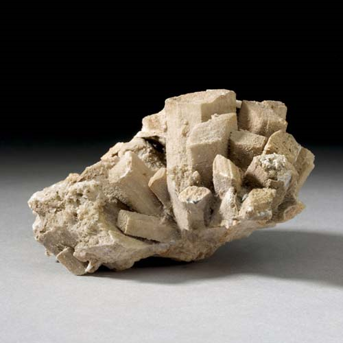
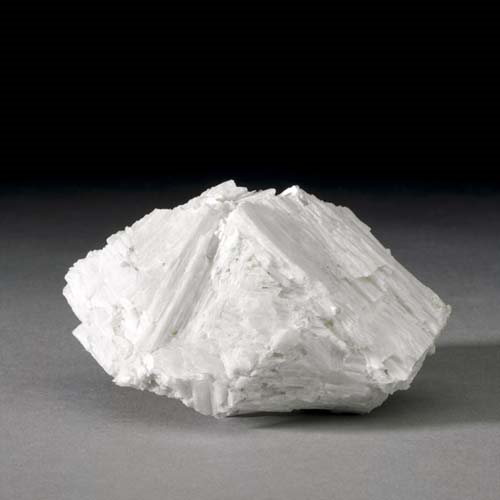

Wollastonite-1A - CaSiO3
Single-Chain Inosilicates



Habit: White, gray white, light green, pinkish, brown, red or yellow. Tabular short or long prismatic crystals; also commonly fibrous, compact or massive. Vitreous or pearly luster; transparent to translucent. White streak.
Environment: Occurs in thermally metamorphosed siliceous carbonates, igneous rocks and skarn deposits.
Etymology: Named after William Hyde Wollaston (1766-1828), the English chemist and mineralogist who discovered palladium in 1804 and rhodium in 1809.